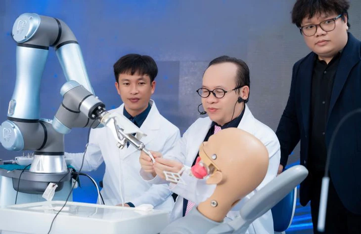

Bác sĩ dẫn dắt chuyên môn. Robot nâng cao độ chính xác. Dữ liệu củng cố niềm tin. Hệ thống chuyển đổi tiếp nhận nhu cầu ngay tại từng điểm chạm.
Đề xuất xây dựng một hệ vận hành Brandformance chạy đồng thời: tạo uy tín, giáo dục thị trường, bắt nhu cầu, chuyển đổi và tối ưu theo dữ liệu thực tế.

YakeBot là bằng chứng công nghệ. TS.BS Võ Văn Nhân và hệ thống Nhân Tâm là nguồn bảo chứng chuyên môn. Chiến dịch phải nối hai tài sản này thành một lời hứa duy nhất, đồng thời mở sẵn đường chuyển đổi từ ngày đầu.
Xây vị thế tiên phong nhưng không phô trương; lấy chuyên môn, quy trình và sự cẩn trọng làm nền.
Robot là công cụ hỗ trợ bác sĩ chuẩn hóa thao tác, tăng khả năng kiểm soát và xử lý ca phức tạp.
Mọi điểm chạm thương hiệu đều có lối vào tư vấn, đăng ký sớm và chăm sóc bằng CRM.
Tạo Brand Impact cho Robot Implant và đồng thời thu nhận 12.000 đăng ký trước có nhu cầu thực, ưu tiên trải nghiệm tại chi nhánh Quận 5.
Định vị Nhân Tâm là hệ thống nha khoa tư nhân tiên phong ứng dụng robot trong Implant, dưới sự dẫn dắt của chuyên gia.
Chuyển nhận thức từ “robot thay bác sĩ” sang “bác sĩ làm chủ công nghệ và lựa chọn mức hỗ trợ phù hợp”.
Tạo 12.000 đăng ký trước để tư vấn, phân loại nhu cầu và xây waiting list chất lượng.
Dùng sự kiện công nghệ và tập khách đăng ký sớm để tạo lực kéo cho chi nhánh mới.
Bốn rào cản cần được xử lý đồng thời trong nội dung, media, trải nghiệm tư vấn và cách phát ngôn.
Giải pháp phá băng không phải giảm vai trò công nghệ, mà đặt công nghệ đúng vị trí trong cấu trúc niềm tin.
Mọi nội dung trọng yếu đều được dẫn dắt bởi chuyên môn, quyết định lâm sàng và trách nhiệm của bác sĩ; robot giữ vai trò hỗ trợ nâng cao độ chính xác.
Cho công chúng hiểu bác sĩ có thể lựa chọn mức tự động, bán tự động, thụ động hoặc định vị tùy từng trường hợp.
Dùng demo mẫu hàm, quy trình chuẩn hóa, chỉ số kỹ thuật và ý kiến chuyên gia để giảm khoảng trống niềm tin.
Xây bộ protocol, video FAQ, bác sĩ đại diện từng cơ sở và quy chuẩn tư vấn thống nhất thay vì phụ thuộc một cá nhân.
Kết nối nội dung sức khỏe, điểm chạm gần phòng khám, cộng đồng Việt Kiều và nhu cầu tìm kiếm Implant.
Tách Branding và Performance; CPL, data sạch, call record và dashboard được theo dõi minh bạch.
Năm trụ cột chiến lược được kết nối trong một hệ vận hành thống nhất, cho phép đồng thời xây dựng uy tín, giáo dục thị trường, khai thác nhu cầu, chuyển đổi và tối ưu hiệu suất theo dữ liệu thực tế.
TS.BS Võ Văn Nhân, premium editorial, expert interview, workshop, media relations.
FAQ, 4 chế độ vận hành, demo mẫu hàm, quy trình, dữ liệu kỹ thuật, myth-busting.
Search, social lead, contextual ads, retargeting, geotarget, Việt Kiều/expat targeting.
Landing page, lead scoring, AI CRM, call recording, booking, nurturing và referral.
Realtime dashboard, social listening, weekly review, creative and audience reallocation.
Uy tín bác sĩ và thương hiệu.
Giảm sợ bằng hiểu biết.
Bắt nhu cầu ngay khi phát sinh.
Tư vấn và xác thực data.
Tái phân bổ theo dữ liệu.
Không dùng một thông điệp chung cho tất cả. Cùng một nền tảng niềm tin nhưng khác proof point, kênh và trigger chuyển đổi.
CRM, referral, bác sĩ tư vấn, community khách hàng, ưu tiên early access và chi nhánh gần nhất.
Overseas community, search, video giải thích bằng tiếng Việt/Anh, tư vấn từ xa và itinerary điều trị.
English content, contextual premium media, Google Search/Maps, international service desk và booking nhanh.
Bảng dưới thể hiện vai trò của từng kênh, cách triển khai và hệ KPI định hướng. Các chỉ số được theo dõi và tối ưu theo dữ liệu thực tế trong suốt chiến dịch.
| Workstream / Kênh | Cách làm | KPI định hướng | Tỷ trọng ngân sách |
|---|---|---|---|
| Premium Content Adnetwork VnExpress, Tuổi Trẻ, VTV, hệ thống Admicro | Chuyên đề “Bác sĩ làm chủ công nghệ”; native article, expert video, contextual display, retargeting. | Tối ưu độ phủ chất lượng, lượt xem video và mức độ quan tâm đến thương hiệu trong phạm vi ngân sách được phê duyệt. | 18% Brand Impact |
| Doctor Uy tín & Social Video Facebook, YouTube, TikTok | 10 video FAQ của TS.BS Võ Văn Nhân; short-form cutdown; myth-busting; 4 mức vận hành. | Tối ưu lượt xem, tỷ lệ xem video và mức độ tương tác với nội dung chuyên gia. | 10% Brand Impact |
| Performance Media Meta, Google, YouTube, TikTok | Search intent, lead ads, landing conversion, retargeting theo hành vi và lead scoring. | Hướng tới mục tiêu 12.000 đăng ký trước; tối ưu CPL và chất lượng dữ liệu theo hiệu quả thực tế của từng nhóm đối tượng, nội dung và kênh. | 30% Performance Engagement |
| Win Location Geo Meta, elevator, Maps, local display | Phủ bán kính quanh Quận 5 và các cơ sở; nhắc nhớ khai trương; CTA tư vấn/đặt lịch. | Tăng độ phủ tại khu vực mục tiêu, lưu lượng truy cập landing page và mức độ quan tâm đến thương hiệu quanh các cơ sở Nhân Tâm. | 5% Brand Impact |
| Workshop / Talkshow khai trương | Đồng tổ chức cùng báo chí vào dịp khai trương Quận 5; demo mẫu hàm; tọa đàm chuyên gia. | Tối ưu lượng khách tham dự, mức độ lan tỏa truyền thông và cơ hội đăng ký tư vấn từ sự kiện. | 7% Brand Impact |
| Việt Kiều & Expat | Community seeding chọn lọc, overseas search, bilingual landing, teleconsultation, referral. | Mở rộng nguồn đăng ký từ nhóm Việt Kiều và người nước ngoài; ưu tiên dữ liệu có nhu cầu rõ ràng và khả năng tiếp cận phù hợp. | 12% Performance Engagement |
| Martech & CRM Landing, Bizfly AI CRM, dashboard | Form phân loại nhu cầu; call record; lead validation; source attribution; nurture automation. | Nâng cao chất lượng dữ liệu, khả năng theo dõi nguồn đăng ký và hiệu quả chăm sóc trên CRM. | 10% Performance Engagement |
| Social Listening & Tối ưu | Baseline trước chiến dịch; theo dõi sentiment, fear point, share of voice; weekly decision room. | Theo dõi diễn biến truyền thông, cập nhật các tín hiệu cần lưu ý và hỗ trợ tối ưu ngân sách theo hiệu quả thực tế. | 8% Performance Engagement |
Ngân sách được ưu tiên theo hai mục tiêu trọng yếu: 40% dành cho Brand Impact nhằm xây dựng vị thế tiên phong và củng cố niềm tin; 60% dành cho Performance Engagement nhằm tạo, nuôi dưỡng và chuyển đổi nhu cầu thành đăng ký trước đạt chuẩn. Tổng ngân sách sẽ được xác lập sau khi thống nhất phạm vi triển khai, baseline dữ liệu và đơn giá thực tế.
Unique reach, frequency, video completion, brand search uplift, sentiment, share of voice.
Search query, landing visits, engaged sessions, form-start, message and hotline clicks.
Đúng tên, SĐT, nhu cầu Implant, contactable, duplicate rate, call outcome.
Appointment, show-up, diagnostic consultation, treatment consideration and referral potential.
Bốn đầu việc dưới đây là cơ sở để hoàn thiện kế hoạch chi tiết, khóa hệ KPI và xây dựng phương án ngân sách phù hợp với phạm vi triển khai thực tế.
Xác nhận vai trò của Robot YakeBot, thông điệp trung tâm, nhóm đối tượng ưu tiên và nguyên tắc truyền thông y khoa.
Làm rõ hạng mục do Nhân Tâm, Bluemoon và admeX phụ trách; cơ chế phê duyệt nội dung, dữ liệu và vận hành theo tuần.
Rà soát baseline truyền thông, năng lực CRM, nguồn dữ liệu hiện hữu và tiêu chí xác định đăng ký trước đạt chuẩn.
Xây dựng media plan, content plan, Martech flow, tiến độ 60 ngày và phương án ngân sách chi tiết để phê duyệt.
Bluemoon giữ chiều sâu thương hiệu và vận hành dài hạn. admeX xây hệ Brandformance, media, Martech và dashboard. Đội Nhân Tâm tiếp tục làm các hạng mục đang có lợi thế, đồng thời thống nhất protocol nội dung, data và tối ưu.